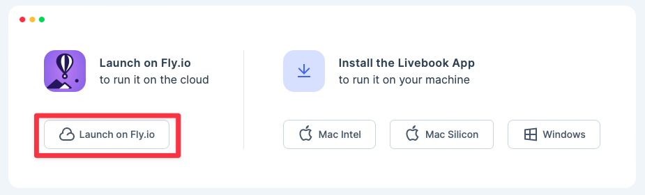

Introduction
Is there room in the Data Science world for another option? The go-to programming languages are and have been Python and R. Could there be another contender?
I’d like to invite you to join me in exploring how to do Data Science with Elixir. In it, we’ll walk through the concepts of Data Science and rebuild the code from the book R for Data Science (R4DS) with Elixir. In addition to translating the code, we’ll also be sprinkling in heavy doses of Elixir-specific features (real-time updates), packages (Explorer and Vega-Lite) and products (Livebook).
I take no credit for the original material, as it was written by Hadley Wickham and Garrett Grolemund.
My hope is the at the end of this, you’ll have a solid foundation of Data Science and will understand how to apply the principles with the fantastic tools that Elixir affords you. Before we get started, I’d like to take a few moments to discuss Elixir and why I think it is poised to do well in the Data Science field.
What is Elixir, and What Makes it Special?
According to the home page, “Elixir is a dynamic, functional language for building scalable and maintainable applications.” Great, what does all that mean? Let’s break it down.
Dynamic – Elixir lets you write your code without having to specify the types (e.g., int, string, float, etc…) for all your variables which saves you time and allows you to iterate faster. This is similar to what you do in Python.
Functional – This style of programming is focused on grouping your code into functions that can be reused to create data transformation pipelines.
Scalable – “All Elixir code runs inside lightweight threads of execution (called processes) that are isolated and exchange information via messages.”. It is not uncommon to have thousands of processes running at the same time. In short, more processes equals doing more stuff at the same time. This is a big difference to the typical single-threaded languages that most people use.
Maintainable – Elixir guarantees data immutability, meaning it never changes. This guarantees that your functions will always return the same result given the same input. As obvious as it sounds, this is not always the case in languages that allow side effects. Combine that with the functional approach to writing software, and you have a recipe for code that is short, concise and just works. It’s refreshing to know that 2 + 2 will always equal 4.
Why use R4DS?
R4DS is near and dear to my heart. It was foundational for me for getting into the field of Data Science. It was the first book (or blog, article, etc…) that made Data Science approachable. IMHO, R4DS does a fantastic job laying out all the tasks a Data Scientist needs to do and not just the glamorous part of creating super cool models that write games, predict prices or summarize text.
I view R4DS as a great benchmark for any language attempting to do Data Science. My plan is to put Elixir through its paces by recreating all the code in R4DS and see where it shines and where it still has work to do. This will give you a clearer picture of how well it does with the workload of a real Data Scientist.
Why Elixir for Data Science?
Functional In Nature If you remember back to your Algebra days, you came across the concept of a function. That function would do some transformation a (typically to x) and save it to a variable (typically y) and looked something like this y=f(x). What makes functional languages special is that given the same input, the output will always be the same. While you may be thinking “duh”, this is not the case with many programming languages.
Clarity in Transforming Data Elixir uses functions to take data and transform it through multiple steps for a desired outcome, model, etc… IMHO, this is what makes the Tidyverse for R so wonderful. Imagine a whole language that works like the Tidyverse!
A Tool Worth Using If you don’t enjoy a tool, then you’ll never use it…regardless of how many “obvious” benefits. According to the Stack Overflow 2022 survey below, Elixir is the 2nd most loved language. The main point here is that the people using Elixir actually enjoy working in it.
Stack Overflow 2022 Survey Results
- A Clear Path to Production Building models on your machine is sweet, but what about when you’re ready to go live? How much additional stuff is needed to turn your Python or R code into something that is production ready? How will you handle …
- Background Jobs
- Crash Recovery
- Long-Running Requests
- Low Latency App State
- Etc…
What additional technologies will you have to include? Is the additional complexity worth it?
In his book, Elixir In Action, Sasa Juric showed, in the table below, that Elixir (built on top of Erlang) gives you all of these things for free!
Elixir already has a production-ready web framework named Phoenix. Do you want to use your model in your website? Done. Do you want to deploy your model results as an API for others to consume? No problem. And the cool part is, Phoenix is The Most Loved Web Framework according to the Stack Overflow 2022 Survey (shown below).
Elixir is turning itself into a one-stop-shop for all your Data Science needs.
Setup and Installation
If you’re still with me, let’s get the setup and install out of the way. There are 3 ways to get up and going with Elixir and Livebook.
If you have access to a computer, the easiest way to get up and going is selecting the Mac or Windows option and downloading the appropriate software for your computer. This requires zero setup. Once downloaded, simply install Livebook, and you’re up and running. That’s it!
If you want to work in the cloud, select the Fly.io option. This requires setting up an account and a few odds and ends. You should be up and running in under 5 minutes. No, I’m not lying. I actually did have a cloud version of Livebook going in under 5 minutes. 
If you’d like to manually install all the parts yourself, then you’ll need to install Erlang, Elixir and run Escript to install Livebook. You can find the directions here.
Finally, let’s install the packages you’ll need
Mix.install([
{:vega_lite, "~> 0.1.6"},
{:kino, "~> 0.6.2"},
{:kino_vega_lite, "~> 0.1.2"},
{:explorer, "~> 0.3.0"}
])